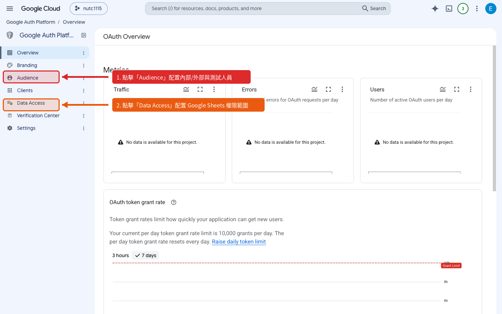
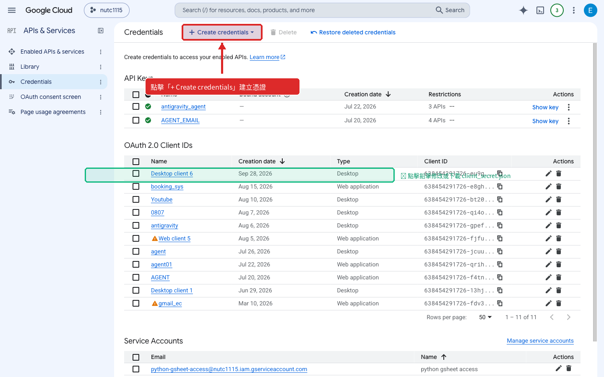
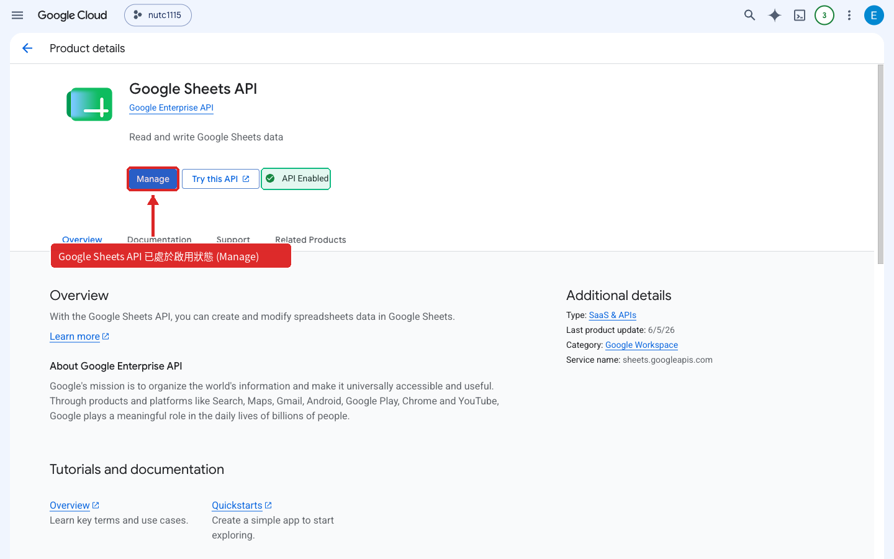

本頁展示了影片後製與截圖標註的雙重技術：不僅用 Python 繪圖引擎精準畫出大紅色醒目箭頭與說明徽章，更透過 FFmpeg 底層濾鏡在影片關鍵時間點自動燒錄紅色焦點外框（Red Focus Box），讓學員看影片與講義時絕不迷路！
（請播放影片：在 15秒、45秒、85秒 處會自動出現紅色重點標註框）
針對初學者最容易找不到按鈕的 3 大關鍵設定點，精確打上標記
如下圖紅色箭頭與紅色遮罩所示，請確認「使用者類型」與「應用程式名稱」，確保發布狀態符合企業內部使用權限。

進入憑證頁面後，許多學員找不到建立按鈕。已用紅色箭頭直接指引頂端工具列，點擊後選取「OAuth 2.0 用戶端 ID」。

如下圖左上角紅框與紅色箭頭標示，確認 API 處於「管理（已啟用）」狀態，才具備試算表讀寫權杖存取能力。
